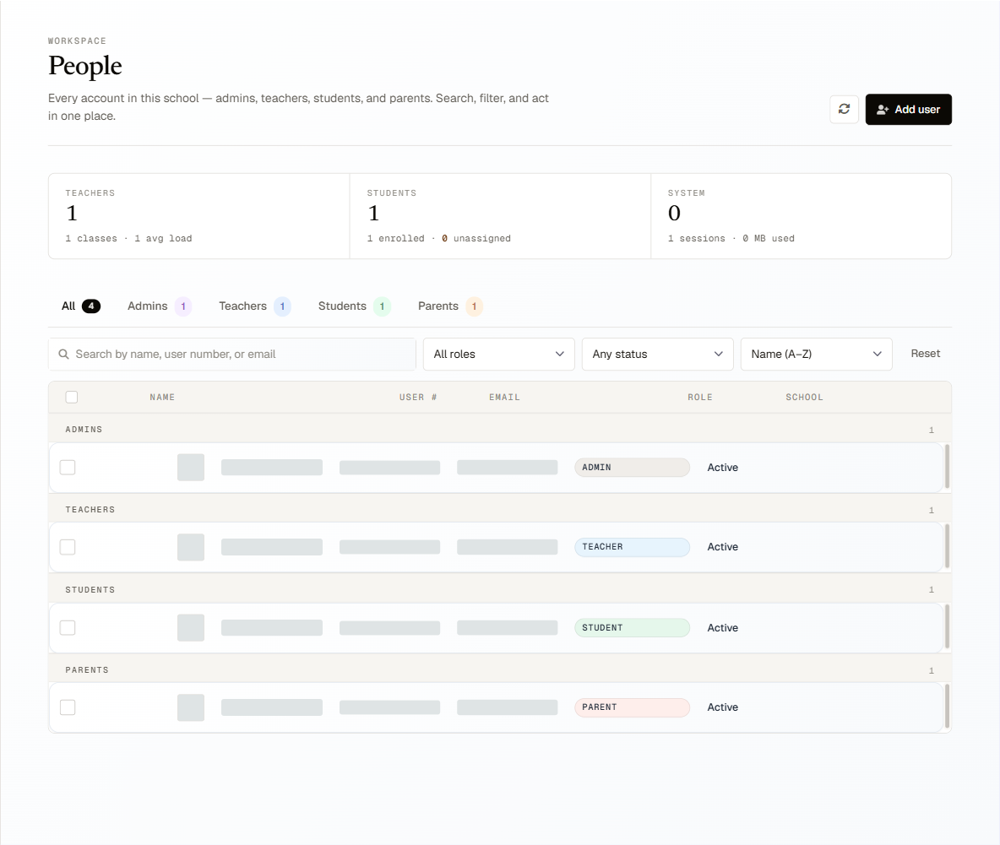
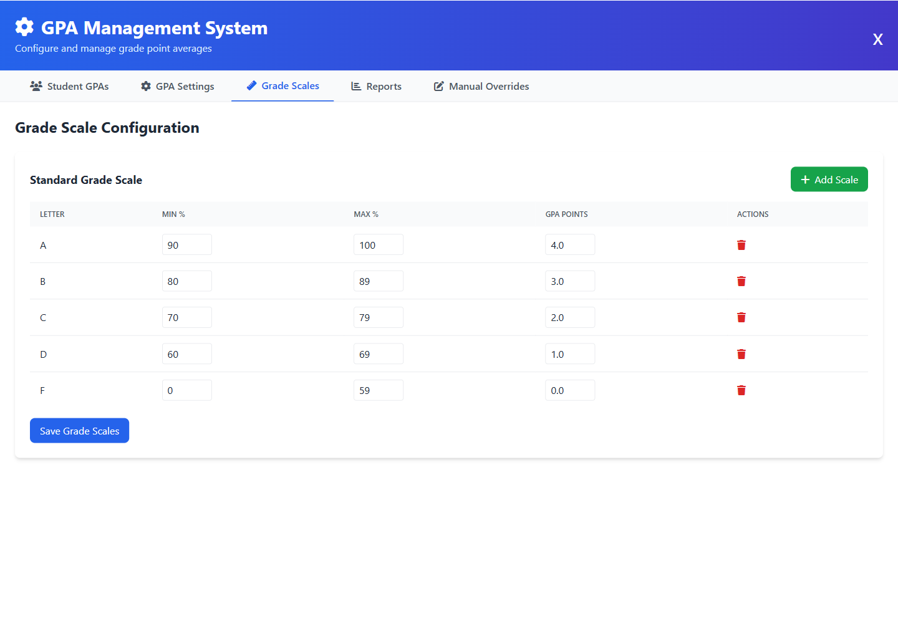
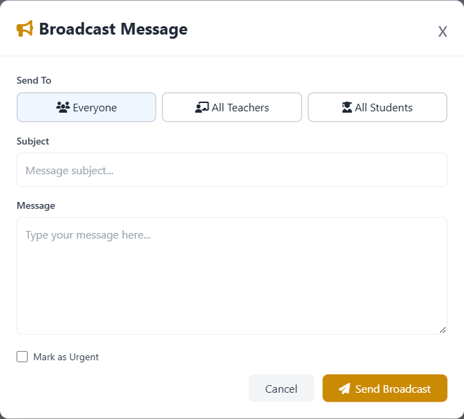

Keep the office in sync.
Organize school accounts, classrooms and records with distinct roles for the people who use them.
School onboarding · Accounts · ReportingSchool management / Built for Liberia
Attendance, assignments, grades and family communication. Give your school a shared place to work.
Every detail.
Connected.
01 / The platform
Less scattered information. A clearer connection between the office, the classroom and home.
Organize school accounts, classrooms and records with distinct roles for the people who use them.
School onboarding · Accounts · ReportingManage attendance, assignments and gradebooks in one working environment, with classroom information close at hand.
Attendance · Assignments · GradebooksConnect parent accounts to their children’s school experience and support communication across the school community.
Parent links · Messaging · Student information02 / Inside the admin workspace
See the tools administrators use to organize people, grading and school communication.
Find accounts, filter by role and manage administrators, teachers, students and parents in one workspace.

Configure letter grades, percentage ranges and GPA points through the school’s grade-scale settings.

Prepare announcements for everyone, teachers or students, with an urgent option for time-sensitive messages.

Screenshots from the current admin application. School access requires an account.
03 / Our focus
A school’s attention belongs with its students. We’re building SentinelClass to make the everyday work around learning easier to organize.
Our current focus is preparing the platform for a controlled Liberia pilot: connecting administration, teachers, students and families, while refining real school workflows.
We’re exploring AI-assisted lesson preparation and school communications, with educators reviewing the results. These are planned capabilities, not currently available product features.
04 / Before we talk
We’re preparing for a controlled Liberia pilot. Contact us for a walkthrough and to discuss whether your school would be a good fit. Pilot participation and timing are arranged directly.
School administrators, teachers, students and parents. The platform connects their work through school accounts, classroom relationships and parent links.
SentinelClass is a browser-based application. During onboarding we’ll review the devices, browsers and internet access your school uses, so you can assess the fit before committing.
We have not published general pricing. Tell us about your school size and requirements, and we’ll discuss the pilot scope and any costs before you decide.
Email hello@devbrose.me with your school name, your role and what you want to improve. Please do not send student records in your initial enquiry.
05 / Leadership
Brose Amen
Founder & Lead Developer
Brose Amen is the founder and lead developer of SentinelClass, a DevBrose EdTech project. He is building digital infrastructure for Liberian schools, bringing administration, teaching and family communication into one place. His mission is to help schools spend less time managing scattered information and more time supporting learning.
Get in touch with Brose ↗Start a conversation
Request a walkthrough or discuss a future pilot.
We’d like to understand how your school works.
Please keep student records and other private information out of your first message.